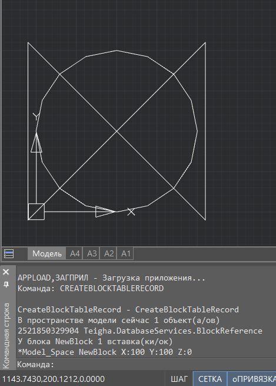

Свернуть все
Свернуть все Развернуть всеСвернуть всеРазвернуть все
Развернуть всеСвернуть всеРазвернуть всеСтатья о том, как программно создать пользовательский блок и добавить его в коллекцию блоков чертежа.
ОписаниеПользовательский блок состоит из двух частей: графической и неграфической. При создании блока сначала создается его неграфическая часть или определение блока. Это определение блока хранится в базе данных чертежа. При необходимости добавить блок в чертеж, создается ссылка на его опреление и добавляется в чертеж. Ссылка на определение блока является его графической частью.
Пример
Класс BlockTableRecord позволяет работать с определениями блоков: создавать, изменять, просматривать значения их свойств.
Ниже приведен пример работы с классом. В примере создается новое определение блока, потом вставка этого блока добавляется в пространство модели чертежа.
На рисунке ниже приведен пример того, как отработала команда CreateBlockTableRecord в новом пустом документе, где еще не созданы пользовательские блоки. Соответственно, в командной строке отобразится только созданный командой блок и его вставка в пространстве модели.
